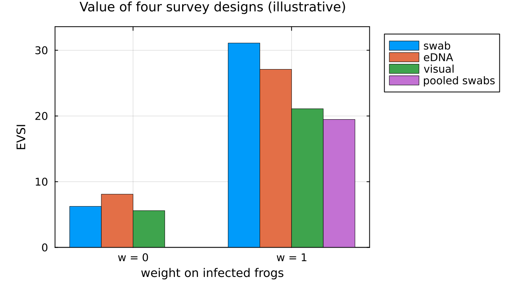

Comparing experiments
Simon Frost
- Motivation
- The problem
- Four designs
- Is one design a garbling of another?
- What ordering implies, and what incomparability implies
- Combining designs
- Deficiency
- What to take away
- Next
Motivation
There is usually more than one way to look for a pathogen: swabs, water samples, a visual check, pooled samples. Which is the better design? Sometimes the answer does not depend on the decision at all. If one design’s result can be produced from another’s by adding noise, the noisier one is a garbling of the other and can never be worth more, whatever the payoffs and whatever the prior (Blackwell’s theorem). When neither design is a garbling of the other, the two are incomparable: which is better depends on the decision. This vignette shows both cases, and the deficiency, a number that says how far one design is from being able to imitate another.
The problem
The problem is the frog pond of the vignette on experiments. Bd may be absent, present at low prevalence, or present at high prevalence. The manager can do nothing, give antifungal baths, or disinfect the pond. Utility is uninfected frogs minus w times infected frogs. Infected but living frogs are not counted as population: at w = 0 they are ignored and at w = 1 each cancels one uninfected frog.
All numbers are illustrative, not data and not estimates for any real test.
using DecisionAnalysis
using FiniteKernels: FiniteSpace, factors, cpt
include(joinpath("..", "_common.jl"))
actions = [:no_intervention, :antifungal_baths, :disinfect_pond]
states = [:absent, :low_prevalence, :high_prevalence]
uninfected = PayoffTable(actions, states, [500 300 100; 470 380 250; 350 340 320])
infected = PayoffTable(actions, states, [0 150 250; 0 60 120; 0 10 20])
prior = FiniteBelief(states, [1 // 2, 3 // 10, 1 // 5])
function bd_problem(w)
return DecisionProblem(infection_payoff(; uninfected, infected, weight=w), prior;
baseline=:no_intervention)
end
md_table(["w", "best action now", "its expected gain over no intervention", "EVPI"],
[[w, first_choice(decide(bd_problem(w), MaxExpectedUtility())),
maximum(expected_gain_over_baseline(bd_problem(w))), evpi(bd_problem(w))]
for w in (0, 1)])| w | best action now | its expected gain over no intervention | EVPI |
|---|---|---|---|
| 0 | antifungal_baths | 39 | 29 |
| 1 | antifungal_baths | 92 | 52 |
Four designs
A swab test of a sample of frogs, as before:
swab = Experiment([19//20 2//5 1//20; 1//20 3//5 19//20];
signals=[:negative, :positive], states=states)Experiment{Rational{Int64}}(2 signals × 3 states, cost 0)An environmental DNA (eDNA) test of pond water. It detects Bd at low prevalence better than the swab does, and gives more false positives. This one is built from a FiniteKernel, a conditional probability table of FiniteKernels.jl, written with one row per state.
Θ = FiniteSpace(:bd, states)
Z = FiniteSpace(:edna, [:negative, :positive])
edna = Experiment(cpt(only(factors(Θ)), only(factors(Z)),
[4//5 1//5 # absent: P(negative), P(positive)
1//10 9//10 # low prevalence
1//20 19//20])) # high prevalenceExperiment{Rational{Int64}}(2 signals × 3 states, cost 0)A visual check for clinical signs. It says little about a low prevalence and is good at picking out a high one.
visual = Experiment([19//20 9//10 3//10; 1//20 1//10 7//10];
signals=[:no_signs, :signs], states=states)Experiment{Rational{Int64}}(2 signals × 3 states, cost 0)Pooled swabs. To save laboratory work the swabs are pooled before testing, which loses information: a positive pool is reported negative one time in five and a negative pool positive one time in ten. This is a garbling of the swab test. garble(e, G) passes the signal of e through the noisy channel G[z′, z] = P(new signal z′ | old signal z), whose columns sum to one, and the likelihood of the result is G * L.
G = [9//10 1//5 # P(reported negative | truly negative), P(reported negative | truly positive)
1//10 4//5]
pooled = garble(swab, G; signals=[:negative, :positive])
designs = ["swab" => swab, "eDNA" => edna, "visual" => visual, "pooled swabs" => pooled]
md_table(vcat("design", "signal", states),
[vcat(name, z, collect(e.likelihood[i, :]))
for (name, e) in designs for (i, z) in enumerate(signal_labels(e))]; digits=3)| design | signal | absent | low_prevalence | high_prevalence |
|---|---|---|---|---|
| swab | negative | 0.95 | 0.4 | 0.05 |
| swab | positive | 0.05 | 0.6 | 0.95 |
| eDNA | negative | 0.8 | 0.1 | 0.05 |
| eDNA | positive | 0.2 | 0.9 | 0.95 |
| visual | no_signs | 0.95 | 0.9 | 0.3 |
| visual | signs | 0.05 | 0.1 | 0.7 |
| pooled swabs | negative | 0.865 | 0.48 | 0.235 |
| pooled swabs | positive | 0.135 | 0.52 | 0.765 |
Is one design a garbling of another?
is_garbling_of(e′, e) answers whether e′ could be produced from e by adding noise. It returns the noise matrix as a witness, or nothing when there is none. The question is settled by an exact linear programme.
is_garbling_of(pooled, swab)2×2 Matrix{Rational{BigInt}}:
9//10 1//5
1//10 4//5The witness is the pooling matrix. The reverse is not possible:
is_garbling_of(swab, pooled) === nothingtrueFor every pair of designs:
md_table(vcat("can be imitated from →", first.(designs)),
[vcat(name′, [name′ == name ? "" : is_garbling_of(e′, e) !== nothing
for (name, e) in designs]) for (name′, e′) in designs])| can be imitated from → | swab | eDNA | visual | pooled swabs |
|---|---|---|---|---|
| swab | - | - | - | |
| eDNA | - | - | - | |
| visual | - | - | - | |
| pooled swabs | yes | - | - |
A row reads: this design is a garbling of the designs marked yes. Only one pair is ordered. Pooled swabs are a garbling of the swab. No other design can imitate any other: the swab, the eDNA test and the visual check are pairwise incomparable.
What ordering implies, and what incomparability implies
For the ordered pair the conclusion needs no payoff table: pooled swabs cannot be worth more than the swab, for any w, any prior and any set of actions. For the incomparable designs the ranking has to be computed, and it can change with the decision.
value = [evsi(bd_problem(w), e) for (_, e) in designs, w in (0, 1)]
md_table(["design", "EVSI at w = 0", "EVSI at w = 1"],
[[name, value[i, 1], value[i, 2]] for (i, (name, _)) in enumerate(designs)])| design | EVSI at w = 0 | EVSI at w = 1 |
|---|---|---|
| swab | 6.25 | 31.1 |
| eDNA | 8.1 | 27.1 |
| visual | 5.6 | 21.1 |
| pooled swabs | 0 | 19.47 |
png_figure(grouped_bars(["w = 0", "w = 1"], first.(designs), permutedims(value);
xlabel="weight on infected frogs",
ylabel="EVSI",
title="Value of four survey designs (illustrative)"))
At w = 0 the eDNA test is worth more than the swab. At w = 1 the swab is worth more than the eDNA test. Neither design is better in general, and this is what incomparability means in practice: the choice of survey has to be made with the management decision in view. The pooled swabs are below the swab at both weights, as they must be, and at w = 0 they are worth exactly nothing.
Combining designs
Running two tests gives a signal that is the pair of results. If the two results are independent given the state, the likelihood of a pair is the product of the two likelihoods. Either single test is a garbling of the pair (ignore the other result), so the pair is worth at least as much as each.
pair_labels = [Symbol(a, :_and_, b) for a in signal_labels(swab)
for b in signal_labels(visual)]
pair_likelihood = reduce(vcat,
[swab.likelihood[i:i, :] .* visual.likelihood[j:j, :]
for i in 1:2 for j in 1:2])
swab_and_visual = Experiment(pair_likelihood; signals=pair_labels, states=states)
is_garbling_of(swab, swab_and_visual) !== nothing,
is_garbling_of(visual, swab_and_visual) !== nothing(true, true)md_table(["design", "EVSI at w = 0", "EVSI at w = 1"],
[[name, evsi(bd_problem(0), e), evsi(bd_problem(1), e)]
for (name, e) in ["swab" => swab, "visual" => visual,
"swab and visual" => swab_and_visual]])| design | EVSI at w = 0 | EVSI at w = 1 |
|---|---|---|
| swab | 6.25 | 31.1 |
| visual | 5.6 | 21.1 |
| swab and visual | 12.89 | 31.1 |
At w = 0 adding the visual check to the swab roughly doubles the value. At w = 1 it adds nothing: the pair is worth exactly what the swab alone is worth, because the visual result never changes the action that the swab result already leads to.
Deficiency
deficiency(e, e′) measures how far e is from being able to imitate e′: the smallest, over all noise matrices applied to e, of the largest total-variation distance between the imitation and e′ across states. It is zero exactly when e′ is a garbling of e. It is not symmetric.
md_table(vcat("deficiency of ↓ with respect to →", first.(designs)),
[vcat(name, [deficiency(e, e′) for (_, e′) in designs]) for (name, e) in designs];
digits=3)| deficiency of ↓ with respect to → | swab | eDNA | visual | pooled swabs |
|---|---|---|---|---|
| swab | 0 | 0.167 | 0.21 | 0 |
| eDNA | 0.154 | 0 | 0.289 | 0.105 |
| visual | 0.257 | 0.338 | 0 | 0.174 |
| pooled swabs | 0.164 | 0.221 | 0.224 | 0 |
The zeros off the diagonal mark the ordered pair: the swab imitates pooled swabs exactly. The deficiency also bounds the damage of using the wrong design. For a payoff table whose payoffs span a range B, acting on e falls short of acting on e′ by at most B × deficiency(e, e′), for every prior.
function value_gap_bound(w, e, e′)
Q = bd_problem(w).payoff.Q
return (maximum(Q) - minimum(Q)) * deficiency(e, e′)
end
md_table(["w", "EVSI of eDNA − EVSI of swab", "bound B × δ(swab, eDNA)",
"EVSI of swab − EVSI of eDNA", "bound B × δ(eDNA, swab)"],
[[w, evsi(bd_problem(w), edna) - evsi(bd_problem(w), swab),
value_gap_bound(w, swab, edna),
evsi(bd_problem(w), swab) - evsi(bd_problem(w), edna),
value_gap_bound(w, edna, swab)] for w in (0, 1)])| w | EVSI of eDNA − EVSI of swab | bound B × δ(swab, eDNA) | EVSI of swab − EVSI of eDNA | bound B × δ(eDNA, swab) |
|---|---|---|---|---|
| 0 | 1.85 | 66.67 | -1.85 | 61.62 |
| 1 | -4 | 108.33 | 4 | 100.14 |
The bounds hold and are loose, as worst-case bounds over all priors usually are.
What to take away
garble(e, G)adds noise to an experiment. A garbling is never worth more than the original, for any decision and any single prior.is_garbling_of(e′, e)decides whether one design can be imitated from another and returns the noise matrix as a witness. It is exact for rational likelihoods.- Most pairs of real designs are incomparable. Then the better design depends on the decision: here the eDNA test is worth more at
w = 0and the swab atw = 1. - A combined design is at least as good as each of its parts, and may be no better than one of them.
deficiency(e, e′)is zero for a garbling and otherwise bounds, through the range of the payoffs, how much worseecan be thane′.
Next
Everything so far has used one probability for each state. Uncertain beliefs drops that assumption and works with sets of priors and with states that have no probabilities at all.